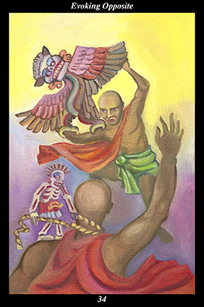

 | IMAGETwo male warriors engage in conflict. One holds an owl on his arm, waving it at his opponent. The other has a small figure of death on his shoulder that is strangling him with a rope. |
INTERPRETATION
This hexagram depicts the way opposites may be used to bring about peace, harmony, and contentment. The conflict between male warriors represents the struggle of people or ideas to dominate one another. The owl symbolizes the opponent’s weaknesses—in this case, the fear of death. Waving the owl at an opponent symbolizes the use of others’ weaknesses in order to unnerve them and break their will for battle. The figure of death strangling the opponent symbolizes others’ self-defeating habits of thought and action that prevent them from successfully overcoming us. Taken together, these symbols mean that you succeed because you make your opponent’s weaknesses your ally.
ACTION
The masculine half of the spirit warrior resorts to spiritual protection in order to avoid direct confrontation or hostility. When efforts to make peace fail and adversarial relationships cannot be healed and our adversaries take it upon themselves to escalate tensions through intimidation, then we find that our intentions for peace and self-restraint and nonintervention harbor equally powerful intentions in the form of their opposites. In order to mobilize these other facets of your intention, however, it is necessary to first look inside and see how your own fears and weaknesses are being used against you: by seeing how debilitating and demoralizing it is to be attacked from within, you can begin to aim your spiritual intent at the fears and weaknesses of your opponent. Because each of us has this enemy-within who attacks us with our own fears and insecurities, it is not difficult to conceive of your opponents’ own enemy-within. Rather than trying to visualize any specific traits or fears or weaknesses, simply allow yourself to feel the presence of your own enemy-within and, knowing that your opponent’s is intrinsically the same, aim your intent to make an ally of your opponent’s enemy-within, offering it support and help and nurture. By strengthening the enemy-within of others, you allow them to defeat themselves from within: haunted by strange dreams and intrusive fears and unnerving memories and unending ruminations, your opponent increasingly loses the self-confidence and passion to pursue an external conflict. Because you evoke the enemy-within of others only as a last resort, you are able to share a life of peace, harmony, and contentment with those around you.
INTENT
Even our enemy-within has an enemy-within. By turning the strategy of spiritual protection inward and aiming your intention at the enemy-within of your own fears and weaknesses, you nurture the opposite within your opposite: ally yourself with the self-defeating part within your self-defeating part and you deprive your enemy-within of its power to rob you of your creative energy and meaningful accomplishments. Undermine your own enemy-within by acknowledging your positive intentions and constructive actions. When we keep in mind that a large part of our self-defeating behavior comes from apathy, rationalization, and emotional detachment, we can see that some of the most prominent features of the enemy-within are ingrained excuses for inaction. For this reason, it is essential that we be able to summon the will to direct action when necessary: the line of least resistance sometimes passes through unavoidable resistance and requires that we act in a manner directly opposite to our personal preferences. For the spirit warrior, there is no greater victory than defeating the enemy-within.
SUMMARY
Know your opponents better than they know themselves. Understand their weak points and know how to exploit them. Defeat your opponent’s will to fight and you avoid much needless suffering. Because this conflict is not of your making, move steadily and confidently to show that you are ready to bring your opponent’s worst fears out into the open. Act without anger or ambition.
THE LINE CHANGES
1° Because of all the conditioning people are exposed to from birth on, nothing is more difficult to attain than naturalness. You have the good fortune to know the social and familial influences on you and to be dedicated to mitigating them. You are a seasoned wayfarer on the road of freedom.
2° Very few people do things with no purpose in mind, yet acting without any expectation is the only way to create a wide-open arena in which anything at all might happen. Trust the world enough that you can play with it. Think in terms of mystery and discovery, not gain and loss.
3° Because you follow your own rules and not the rule of self-interest, you alone are trusted by those above. Because they follow the rule of gain and loss, your peers cannot be trusted to reorganize things for the next phase. Do not become cautious now—complete your task, then move on.
4° Because you do not follow the rule of self-interest, your motives are a mystery—this means you cannot be controlled, or trusted, by those above. Being excluded from such an oppressive group, however, frees you up to remain creative. They have better resources, you have better choices.
5° Being unswervingly loyal to your principles does not mean letting people pigeonhole you. Don’t fall into the trap of speaking and acting as others expect you to. If water stops flowing, it becomes stagnant—if you stop responding spontaneously, you become what you have stood against.
6° The time for creative expansion is over—you must move into the next phase with meticulous planning and tactful reserve. Failing to adapt your temperament to these more complicated times will result in real setbacks. Pay attention to how others are changing and mirror them.